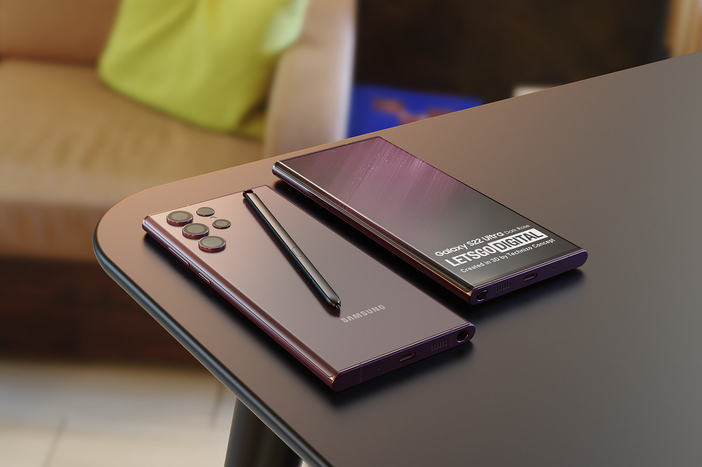

Samsung
Samsung Galaxy S22
Nos do TecBlog fizemos um pequeno resumo sobre o Samsung Galaxy S22 para você.
Tela
6,8” Dynamic AMOLED 2X, Full HD, Infinity-O Edge-Display, 1-120 Hz, Gorilla Glass Victus+
Processador
Qualcomm Snapdragon 8 Gen 1
RAM
12 GB
Armazenamento
256 e 512 GB
Câmera frontal
40 MP f/2,2
Câmera traseira principal
108 MP, f/1,8
Câmera traseira ultrawide
12 MP, 120°, f/2,2
Câmera traseira teleobjetiva
10 MP, f/2,4 (zoom óptico de 3x)
Câmera traseira teleobjetiva
(2)10 MP, f/4,9 (zoom óptico de 10x)
Bateria
5.000 mAh
Conectividade
5G, Wi-Fi 6E, Bluetooth 5.2 e S Pen
Sistema operacional
Android 12 com One UI 4.1
Dimensões
77,9 x 163,3 x 8,9 mm
Peso
229 gramas
Cores
Branco, preto, verde e vinho
Para uma analise mais aprfundada clique em "Leia mais"!
Apple
Iphone 13

Nos do TecBlog fizemos um pequeno resumo sobre o Iphone 14 para você. Lembrando que o Iphone tem varias versões!
Tela
OLED de 5,4 polegadas com resolução de 2340 x 1080 pixels, 476 ppp, brilho de 800 nits, HDR e Ceramic Shield
Processador
hexa-core Apple A15 Bionic com GPU de 4 núcleos
RAM
Não informado
Armazenamento
128 GB, 256 GB ou 512 GB
Bateria
2.500 mAh com recarga rápida de 20 W e recarga sem fio MagSafe (sem carregador na caixa)
Câmeras traseiras
Principal
12 megapixels (f/1,6), estabilização óptica de imagem
Grande angular
12 megapixels (f/2,4), 120 graus
Câmera frontal
12 megapixels (f/2,2)
Conectividade
Wi-Fi 6, Bluetooth 5.0, 3G, 4G, 5G (sub-6 GHz), porta Lightning, NFC, GPS, Glonass, Galileo, QZSS, dual SIM (nano-SIM e eSIM)
Sistema operacional
iOS 15
Sensores
Reconhecimento facial (Face ID), de luz ambiente, de proximidade, acelerômetro, giroscópio de três eixos, barômetro
Dimensões
131,5 x 64,2 x 7,65 mm
Peso
140 gramas
Cores
Azul, branco, preto, rosa e vermelho
Para uma analise mais aprfundada clique em "Leia mais"!
Xiaomi
Xiaomi Poco X3

Nos do TecBlog fizemos um pequeno resumo sobre o Xiaomi Poco X3 para você.
Tela
IPS LCD de 6,67 polegadas, resolução Full HD+ (2400×1080 pixels), 395 ppi, HDR10, proporção de 20:9, taxa de atualização de 120 Hz, taxa de amostragem de toque de 240 Hz, Gorilla Glass 5
Processador
Qualcomm Snapdragon 732G octa-core de até 2,3 GHz (Kryo 470) e GPU Adreno 618
RAM
6 GB de LPDDR4X
Armazenamento
64 GB ou 128 GB (UFS 2.1) expansíveis com microSD de até 256 GB
Câmeras traseiras
Principal
Sony IMX 682 de 64 megapixels, f/1,89
Grande angular
13 megapixels, f/2,2, 119 graus
Macro
2 megapixels, f/2,4
Profundidade
2 megapixels, f/2,4
Câmera frontal
20 megapixels, f/2,2
Bateria
5.160 mAh, carregador de 33 W
Sistema operacional
Android 10 com interface MIUI 12
Conectividade
USB-C, entrada para fones de ouvido (3,5 mm), Bluetooth 5.1, Wi-Fi 5, rádio FM, infravermelho, NFC, GPS, Beidou, Glonass, Galileo, dua SIM (híbrido)
Sensores
leitor de digitais na lateral, acelerômetro, giroscópio, proximidade, bússola
Outros
certificação IP53, sistema de resfriamento LiquidCool Plus e duplo alto-falante
Dimensões e peso: 165,3 x 76,8 x 9,4 mm; 215 g